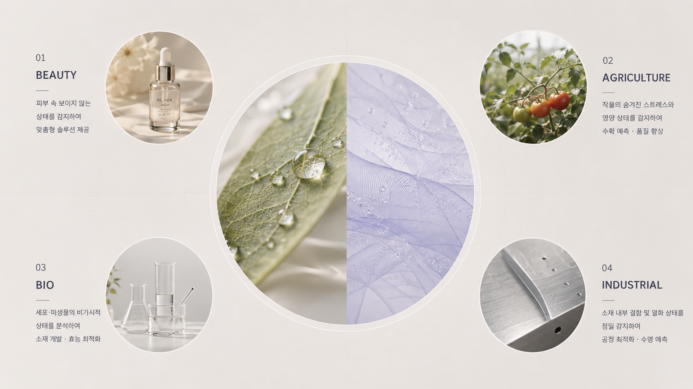

LEADER

이동훈 CEO
충북대학교 바이오시스템공학과 교수(2013~현재)로,
바이오시스템 정보기술 융합과 농업특화 인공지능 시스템 설계·자동화를
연구해 왔습니다.
보유 특허 30건(국내 8건, PCT 2건), 최근 3년
기술이전 18건(2.5억원), 게재 논문 6편의 실적을 바탕으로
FINSIDE의 핵심 기술을 이끌고 있습니다.
FINSIDE(파인사이드)는 AI와 비접촉 내부 분석 기술을 기반으로,
보이지 않는 내부 데이터를 정량화하여 산업에 적용하는 지능형 분석 솔루션 기업입니다.

충북대학교 바이오시스템공학과 교수(2013~현재)로,
바이오시스템 정보기술 융합과 농업특화 인공지능 시스템 설계·자동화를
연구해 왔습니다.
보유 특허 30건(국내 8건, PCT 2건), 최근 3년
기술이전 18건(2.5억원), 게재 논문 6편의 실적을 바탕으로
FINSIDE의 핵심 기술을 이끌고 있습니다.